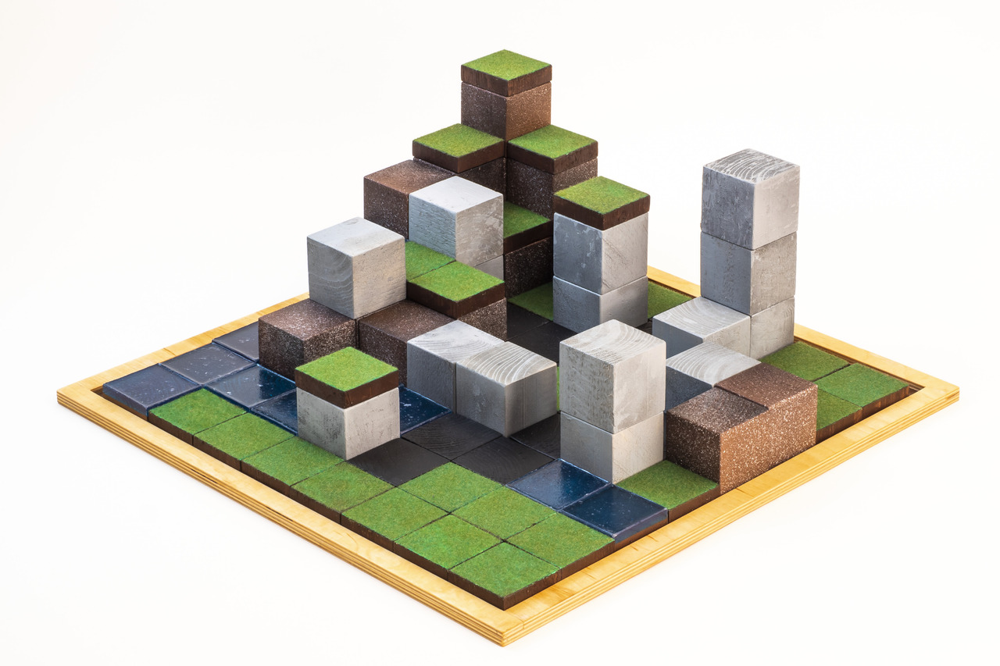
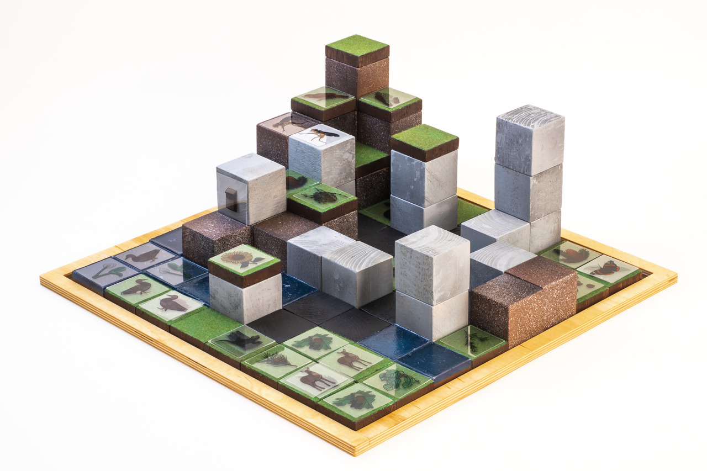
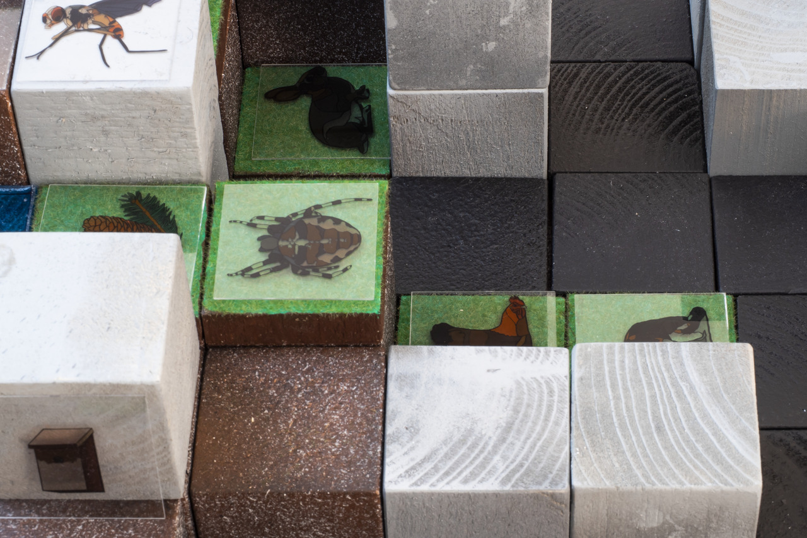
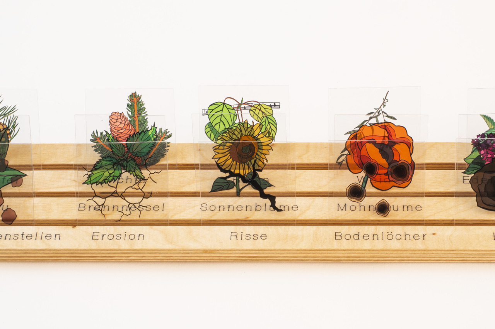

Unsere Städte waren lange Zeit fast ausschließlich
als Raum für Menschen und ihre Lebensweisen konzipiert. Doch damit ist
jetzt Schluss. Um die Stadt für alle Spezies freundlicher und inklusiver
zu gestalten, können hier experimentell alternative Stadtkonzepte
entwickelt werden, die wirklich Lebensraum für alle bieten.
Im Spiel bauen alle Mitspielenden gemeinsam mit verschiedenen baulichen
und natürlichen Elementen eine ihrer Vorstellung entsprechenden Stadt.
Dann werden die Karten einzelner Spezies zugelost, die nun mit
Erweiterungselementen vertreten werden sollen. Die Karten enthalten
Informationen zu den Bedürfnissen der Spezies beispielsweise bezüglich
Lebensraum und Nahrung. Da die eingesetzten Spezies nicht unbedingt
immer untereinander harmonieren, können Konflikte entstehen, für die im
Diskurs Lösungen gesucht werden müssen. Szenariokarten (z.B. Dürre)
regen den Spielfluss zusätzlich an.
Was wäre, wenn die Stadt gleichwertig und für alle Lebewesen gerecht gestaltet werden würde?




HINTERGRUND:
Mit der weltweiten Urbanisierung haben Städte eine besondere
Relevanz für lokale und globale klimatische und ökologische
Zusammenhänge. Sie bilden gewissermaßen ein eigenes Ökosystem, das oft
eher abgeschottet und kontrolliert wird. Dies wirft vor dem Hintergrund
der Klimakrise und des Verlustes der Artenvielfalt grundsätzliche Fragen
zu unserer urbanen Lebensart auf.
In vielen Teilen der Welt - und bei uns noch bis vor gut 100 Jahren -
ist oder war es üblich, mit Nutztieren zusammenzuleben. Sie waren Teil
der Familie und oft eine Überlebens-Versicherung. Ein interspezifisches
Zusammenleben ist von daher grundsätzlich nichts Neues - aber es müssen
nicht unbedingt nur Nutztiere sein. Auch wenn es um Tiere geht, die
nicht in unsere Ästhetik-Vorstellungen passen, ist ihr Nutzen eindeutig:
Gesunde Ökosysteme sind aus vielen Gründen wichtig für den Menschen.
Wieso sollten also nicht alle Spezies in den Städten leben dürfen? Das
experimentelle Spiel ist angelehnt an Animal-Aided Design, einer
stadtplanerischen Strategie, die Tiere und Pflanzen einschließt, und
Jenseits der Natur_Volksherrschaft im Garten, einem partizipativen
Politexperiment des Club Real, bei dem alle Lebewesen eines bestimmten
Ortes rechtlich in einem Parlament vertreten werden.
Von Spielenden vertretene Spezies und wo ihre menschlichen Vertreter*innen leben möchten.